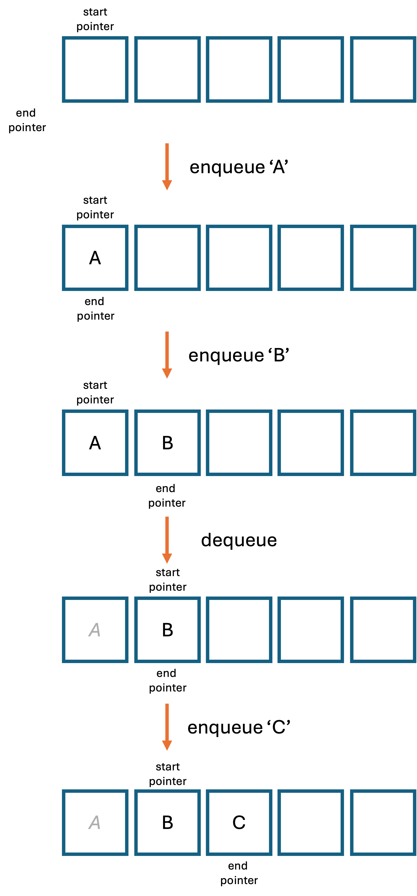

GCSE Link: None
 A linear queue is a static abstract data type which stores a sequence of items.
A linear queue is a static abstract data type which stores a sequence of items.
Queues have two key operations: enqueue (add an item to the end) and dequeue (remove an item from the start). Only the first item can be accessed from the queue. This means that the queue operates on a First In First Out (FIFO) basis.
Queues store start and end pointers to show where the data starts and stops.
Diagram 1 shows some operations being carried out on a linear queue.
 Diagram 1
Diagram 1

Note that when dequeueing, the data is not deleted or shifted: we only increment the start pointer. This makes the process more efficient.
 What are some uses of queues?
What are some uses of queues?
For example, buffering data from streams such as a YouTube video, or handling multiple file downloads.